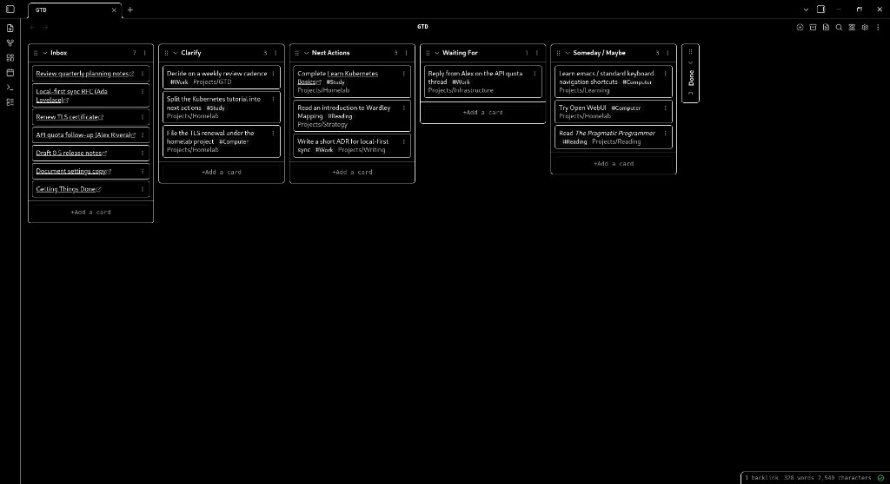

Obsidian community plugin
Syncer
Your inboxes, one Markdown note.
Syncer is an Obsidian plugin. Its purpose is to fetch references and links from Google Tasks, Gmail Starred, Microsoft To Do, Outlook flagged mail, Azure DevOps work items, Firefox Bookmarks, and Todoist, and write them into a Markdown note in your local vault under a heading you choose. Syncer runs on your computer inside Obsidian. It does not operate a Syncer backend, proxy, or hosted API.

What Syncer syncs
Tokens stay in Obsidian data.json. Synced lines are
written into the note you choose. Disconnect clears local
credentials for that integration.
Optional write-back can complete, uncomplete, star, flag, or delete items in the connected provider. Off by default where it can change remote data.